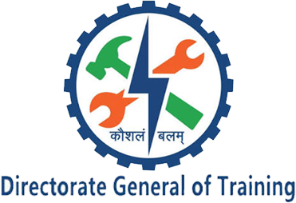

AND ENTREPRENEURSHIP  NATIONAL SKILL TRAINING INSTITUTE
KOLKATA

About NSTI - NSTI Kolkata
National Skill Training Institute Kolkata (erstwhile known as A.T.I Kolkata) situated on sprawling 30-acre campus was established in 1961 as pioneer training institute under the aegis of D.G.T, Ministry of Skill Development & Entrepreneurship, Govt.of India. Its former name - Central Training Institute for Instructors (CTI) was changed to A.T.I. when the institute was upgraded with the launching of Advanced Vocational Training System (AVTS) program me in October 1977 with the assistance of UNDP/ ILO/World Bank. The uniqueness of this institute lies in its state of the art technology, hands on experience and constant transfer of expertise from the industries. It has modern and sophisticated labs and workshops equipped with latest trainer kits and machineries. It is one of the center of excellences developed under World Bank Project of Govt. of India.